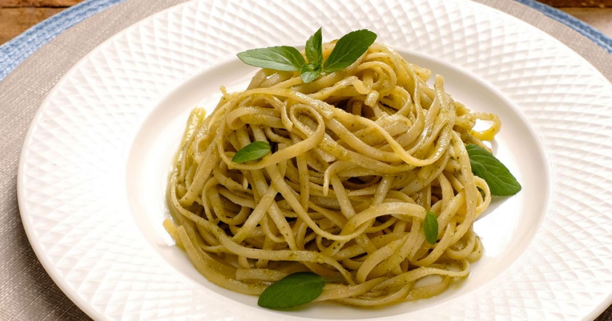
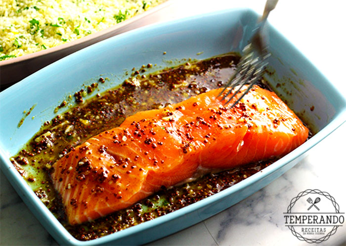

Frango Grelhado com Limão e Ervas

Ingredientes:
- Peitos de frango
- Suco de limão
- Ervas frescas (como alecrim, tomilho e salsa)
- Sal e pimenta a gosto
Modo de Preparo:
- Tempere os peitos de frango com sal, pimenta e suco de limão.
- Deixe marinar por 15-30 minutos.
- Pré-aqueça a grelha em fogo médio-alto.
- Grelhe o frango por 6-8 minutos de cada lado, ou até que esteja cozido
por completo.
- Nos últimos minutos de grelhamento, adicione as ervas frescas sobre o
frango.
- Retire da grelha, deixe descansar por alguns minutos e sirva.
Receita 2: Macarrão com Molho Pesto

Ingredientes
- Macarrão (preferencialmente espaguete)
- Folhas de manjericão fresco
- Azeite de oliva
- Nozes ou pinhões
- Queijo parmesão ralado
- Alho
- Sal e pimenta a gosto
Modo de Preparo
- Cozinhe o macarrão de acordo com as instruções da embalagem.
- Enquanto o macarrão cozinha, prepare o molho pesto:
- Em um processador de alimentos, misture as folhas de manjericão, alho, nozes ou pinhões, queijo parmesão, sal e pimenta.
- Com o processador ligado, adicione gradualmente o azeite até obter uma consistência suave.
- Escorra o macarrão cozido e misture-o com o molho pesto. - Sirva com um pouco mais de queijo parmesão por cima.
Receita 3: Salada de Quinoa com Legumes

Ingredientes
- Quinoa
- Legumes variados (como pepino, tomate, pimentão, cebola roxa)
- Salsa fresca
- Suco de limão
- Azeite de oliva
- Sal e pimenta a gosto
Modo de Preparo
- Cozinhe a quinoa de acordo com as instruções da embalagem e deixe esfriar.
- Corte os legumes em pedaços pequenos e pique a salsa.
- Em uma tigela grande, misture a quinoa, os legumes e a salsa.
- Tempere com suco de limão, azeite de oliva, sal e pimenta.
- Misture bem e deixe a salada descansar por alguns minutos antes de servir.
Receita 4: Salmão Assado com Mel e Mostarda

Ingredientes
- Filés de salmão
- Mel
- Mostarda dijon
- Alho picado
- Suco de limão
- Sal e pimenta a gosto
Modo de Preparo
- Pré-aqueça o forno a 180°C.
- Em uma tigela, misture o mel, a mostarda, o alho picado, o suco de limão, sal e pimenta.
- Coloque os filés de salmão em uma assadeira forrada com papel alumínio.
- Pincele a mistura de mel e mostarda sobre o salmão.
- Asse no forno por cerca de 12-15 minutos, ou até que o salmão esteja cozido e se desfaça facilmente com um garfo.
- Sirva o salmão com o molho que se formou na assadeira
Receita 5: Omelete de Queijo e Espinafre
Ingredientes
- Ovos
- Queijo ralado (como queijo cheddar ou muçarela)
- Espinafre fresco
- Cebola picada
- Sal e pimenta a gosto
- Manteiga
Modo de Preparo
- Em uma tigela, bata os ovos e tempere com sal e pimenta.
- Em uma frigideira antiaderente, derreta um pouco de manteiga em fogo médio.
- Adicione a cebola picada e refogue até ficar dourada.
- Adicione o espinafre fresco e cozinhe até que murche.
- Despeje os ovos batidos na frigideira e mexa delicadamente para distribuir os ingredientes uniformemente.
- Quando a omelete estiver quase pronta, adicione o queijo ralado por cima.
- Dobre a omelete ao meio e cozinhe por mais alguns minutos até que o queijo derreta.
- Deslize a omelete para um prato e sirva quente.